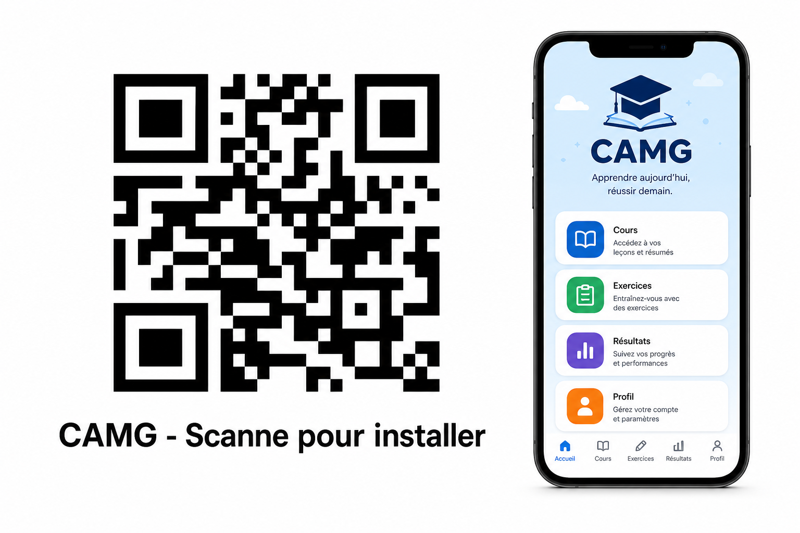

Pas besoin d'aller au Play Store. Pas besoin de beaucoup de connexion. 30 secondes, et l'icône de Daniel apparaît sur le téléphone — même hors connexion après.
Avec l'appareil photo du téléphone

ou tape ce lien dans Chrome :Envoie cette page sur WhatsApp à tes clients. Ils scannent, ils installent. Tu n'as rien d'autre à faire.